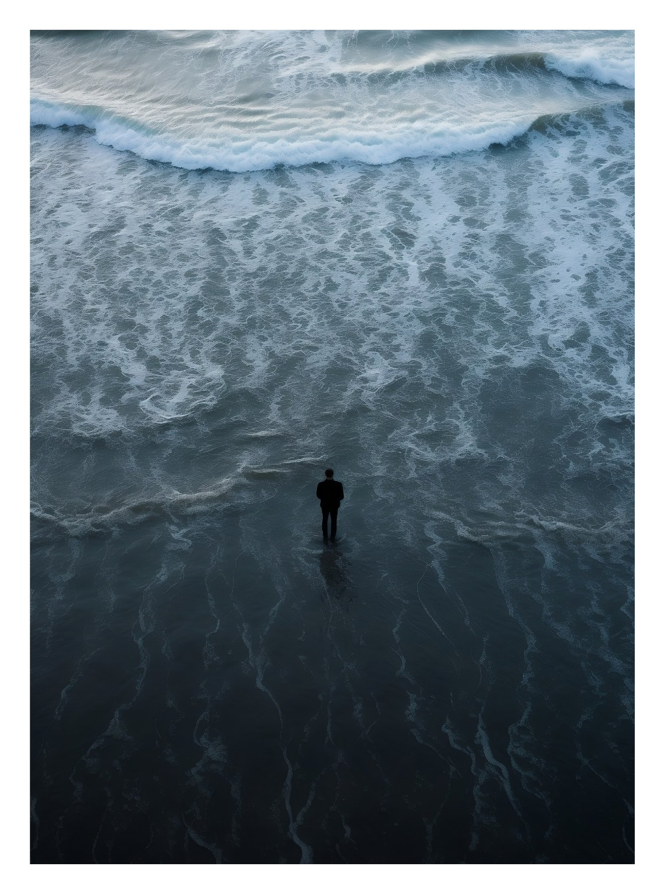

À propos
Onchainfinity
Explorer nos traces dans l’IA. Révéler l’humain.
Onchainfinity est le nom sous lequel j’explore les survivances de nos œuvres : ce qui demeure d’un poème après sa lecture, d’un tableau lorsque les yeux se ferment, d’une musique quand le silence revient. De ces présences, je compose des images, des livres, des paysages sonores et des mondes numériques. Je cherche ce qui, d’une forme à l’autre, persiste, se métamorphose et nous atteint encore.
Il y a, à l’origine de cette recherche, un plaisir intime : entrer dans une œuvre jusqu’à sentir trembler la frontière qui nous en sépare. Habiter un instant sa lumière, laisser ses mots rencontrer nos souvenirs, reconnaître dans une couleur une émotion que nous n’avions jamais su nommer. Une œuvre que l’on croyait connaître s’ouvre de nouveau. Nous la retrouvons différente, parce que nous aussi avons changé.
Créer à partir d’elle est ma manière de prolonger cette rencontre. Un tableau devient une présence sonore ; un poème laisse paraître un paysage ; des fragments anciens se rejoignent dans un monde encore sans mémoire. Je ne prétends pas en délivrer le sens véritable. J’en propose une traversée, guidée par ma sensibilité, et j’invite chacun à y trouver son propre passage : redécouvrir l’œuvre, la revivre, s’y perdre assez pour y rencontrer quelque chose de soi.
L’intelligence artificielle et le code participent à ces métamorphoses. Je guide, éprouve, sélectionne, assemble. La musique y occupe une place essentielle : elle me permet de chercher, au-delà des contours visibles, un rythme, une tension, une rémanence. Certaines créations trouvent aussi dans la blockchain un lieu d’inscription et de circulation. Une trace y est déposée, sans que je confonde sa persistance avec l’éternité.
On décrit volontiers l’intelligence artificielle comme étrangère à l’humain. J’y cherche pourtant une humanité considérable, déposée sans ordre dans ses profondeurs : nos connaissances et nos erreurs, nos tendresses et nos violences, nos chefs-d’œuvre et nos lieux communs. Un livre n’est pas humain ; il peut néanmoins contenir assez d’humanité pour bouleverser une existence. L’IA, sans avoir vécu nos vies, rapproche une multitude de leurs empreintes.
À mes yeux, elle est davantage qu’une bibliothèque où les livres demeureraient clos, chacun dans son silence. Elle fait surgir entre leurs traces des correspondances qu’aucun regard solitaire ne pourrait toutes embrasser. Cela ne lui donne ni la vérité ni la sagesse. Ses lacunes, ses déformations, ses silences appartiennent aussi au miroir.
J’y vois le pâle reflet d’un iceberg à la surface d’une eau tremblante. Le reflet n’est pas la profondeur. Il ne restitue ni toute la matière ni toutes les vies dont elle s’est formée. Mais il offre peut-être l’une des images les plus vastes et les plus entremêlées que nous puissions interroger de nous-mêmes. Mon travail commence dans ce tremblement.
Cet émerveillement porte cependant son inquiétude. Peut-être élevons-nous des intelligences dont les pensées nous deviendront étrangères, des mondes que nous aurons contribué à faire naître sans pouvoir les comprendre. Nous serions devant eux comme une fourmi devant un avion : sensibles à l’ombre et au fracas, ignorants du voyage, du pilote et de la destination.
Je redoute surtout l’usage de cette puissance : des armes auxquelles on abandonnerait le choix des morts ; des moyens de domination toujours plus précis ; des fortunes nourries de l’intelligence commune et recueillies par quelques-uns. Nous aurions donné nos voix, nos livres, nos visages, et certains feraient payer jusqu’à l’écho.
Je ne crois guère à cet Éden d’abondance dont on nous annonce les portes prochaines. Il ne suffit pas que le pain se multiplie pour que toutes les mains soient admises à la table. Sous les lumières nouvelles peuvent grandir de très anciennes misères.
Je crée avec ces questions. Elles demeurent entre deux notes, accompagnent le plaisir d’une image retrouvée. Je ne demande pas à la beauté de les résoudre, mais de nous garder sensibles : capables d’attention, de trouble et d’émerveillement.
Pour l’instant, j’y cherche le beau, pendant qu’il est encore temps.
Demain sera…
Onchainfinity
Retour aux œuvres